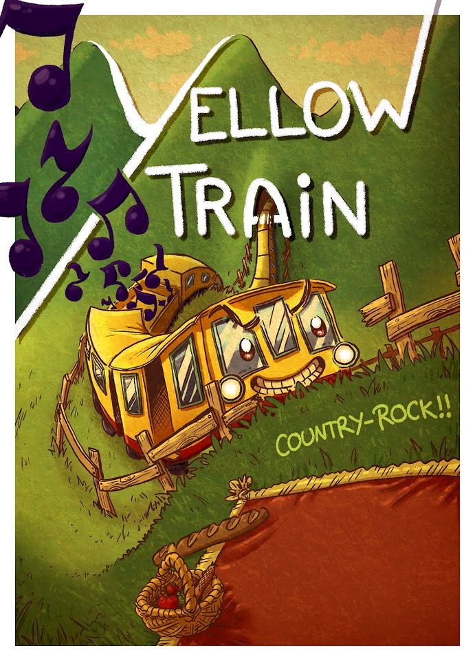
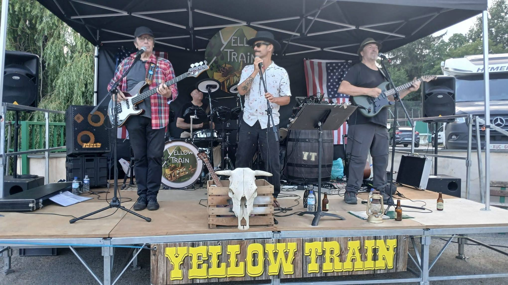

Le country-rock
prend le train.
Du caractère, du rythme et vingt ans de scène au compteur. Yellow Train embarque vos soirées.
Un petit groupe.
Un grand voyage.
Né en Cerdagne, Yellow Train fait rouler le country-rock depuis vingt ans — et n’a pas l’intention de ralentir.
Café-concert, festival, fête locale ou soirée américaine : on arrive avec l’énergie, les guitares et l’envie de faire danser. Une formule chaleureuse, sincère, taillée pour les soirées qui s’étirent.
En savoir plus sur Facebook
Yellow Train en images



Du son, des images.
Du live, surtout.
Le mieux, c’est encore de nous voir jouer. Retrouvez les photos, actus et vidéos du groupe sur notre page Facebook.
Les liens s’ouvrent sur les pages du groupe et sa vidéo Facebook.
On joue
chez vous ?
Une date, une idée, une envie de rock ? Écrivez au groupe pour parler de votre événement.
Contacter Yellow Train